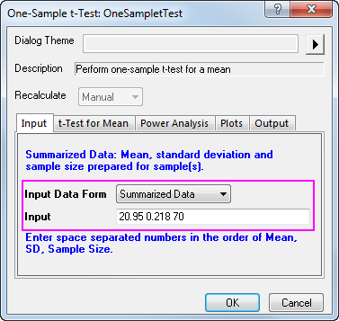

|
|
|
Hypothesentests werden oft verwendet, um die Qualität von Stichprobenparametern abzuschätzen oder um zu testen, ob Schätzwerte eines gegebenen Parameters für zwei Stichproben gleich sind.
Mit parametrischen Methoden werden Annahmen über die zugrundeliegende Verteilung gemacht, von der aus die Grundgesamtheit der Stichprobe ausgewählt wird. Normalerweise ist es erforderlich, dass die Daten unabhängig voneinander aus einer Normalverteilung ausgewählt werden.
Dieses Tutorial zeigt Ihnen:
| Datentyp | Ziel | Methode |
|---|---|---|
| Eine Stichprobe | Mittelwert eines gegebenen Werts vergleichen | t-Test bei einer Stichprobe |
| Varianz mit einem gegebenen Wert vergleichen | Test auf Varianzen bei einer Stichprobe | |
| Zwei Stichproben | Testen, ob die Mittelwerte gleich sind | t-Test bei zwei Stichproben |
| Testen, ob die Varianzen gleich sind | Test auf Varianzen bei zwei Stichproben | |
| Verbundene Stichproben | Testen, ob die Mittelwerte gleich sind | t-Test bei verbundenen Stichproben |
Angenommen, ein Hersteller stellt Schraubenmuttern von hoher Qualität her, die einem Durchmesser von 21 Millimetern entsprechen müssen. Die Abteilung der Qualitätssicherung hat zufällig 120 Muttern aus den fertigen Produkten gezogen, jeweils die Durchmesser gemessen und die Ergebnisse in der Datei Diameters.dat gespeichert. Die Mitarbeiter möchten untersuchen, ob der mittlere Durchmesser der Schraubenmuttern 21 entspricht oder nicht. Die Verteilung der gemessenen Durchmesser ist erfahrungsgemäß bekannt dafür, nah an der Normalverteilung zu liegen, aber die Standardabweichung der Grundgesamtheit ist unbekannt. Daher macht es Sinn, den t-Test bei einer Stichprobe in Origin zu verwenden, und dafür die untenstehenden Schritte zu befolgen:
Die Tabelle der deskriptiven Statistik zeigt den Stichprobenumfang, den Mittelwert, die Standardabweichung und den Standardfehler für die Variable. Der Mittelwert der Stichprobe ist mit 21,00459 vergleichsweise ein wenig größer als der Hypothesenmittelwert von 21. Der Standardfehler des Mittelwerts (SEM) liegt bei 0,00156.
In der Tabelle des t-Tests ist zu sehen, dass die t-Statistik (2,9437) und der verbundene p-Wert (0,00404) belegen, dass der durchschnittliche Durchmesser der Schraubenmuttern gleich 21 auf dem Niveau  ist.
ist.
Das Konfidenzintervall gibt an, dass eine Konfidenz von 95% besteht, dass der wirkliche Mittelwert von der Variablen innerhalb des Intervalls [21,0015, 21,00769] liegt.
Um einen t-Test bei einer Stichprobe mit zusammengefassten Daten durchzuführen, müssen Sie die Eingabedatenform auf der Registerkarte Eingabe auf Zusammengefasste Daten setzen.
Angenommen, dieses Mal wurden 70 Muttern gemessen, so dass der Stichprobenumfang 70 beträgt. Nach weiteren Berechnungen haben Sie den Wert 20,95 für den Mittelwert und 0,218 für die Standardabweichung ermittelt. Der Mittelwert, die Standardabweichung und der Stichprobenumfang werden nun unten in das Feld Eingabe eingegeben: 
Dann wird auf der Registerkarte t-Test für Mittelwert 21 als Testmittelwert gesetzt. Klicken Sie zum Ausführen auf OK.
Es ergibt sich die untenstehende Zusammenfassungstabelle. Die Ergebnisse weisen darauf hin, dass der Mittelwert der Grundgesamtheit sich NICHT signifikant von dem Testmittelwert in dieser Untersuchung unterscheidet.
Angenommen, Sie möchten die Abriebfestigkeit zwischen zwei Reifentypen vergleichen. Dazu nehmen Sie nach dem Zufallsprinzip Reifen der beiden Typen und gruppieren Sie in 8 Paare. Stellen Sie sicher, dass jedes Paar aus zwei verschiedenen Reifentypen besteht. Verteilen Sie die eingeteilten Reifen dann paarweise auf 8 Flächen, führen Sie den Abriebtest durch und messen Sie die Abriebdaten, um dann den t-Test für verbundene Stichproben durchzuführen.
In der Tabelle des t-Tests zeigen die t-Statistik (2,83119) und der verbundene p-Wert (0,02536), dass der Unterschied zwischen den zwei Mittelwerten signifikant ist, das heißt, dass die zwei Reifentypen eine unterschiedene Abriebfestigkeit haben.
t-Test bei verbundenen Stichproben unter Verwendung von zusammengefassten Daten durchführen
Um einen t-Test bei verbundenen Stichproben mit zusammengefassten Daten durchzuführen, müssen Sie die Eingabedatenform auf der Registerkarte Eingabe auf Zusammengefasste Daten setzen.
Angenommen, dieses Mal wurden 16 Stichproben getestet, so dass der Stichprobenumfang 16 beträgt. Nach weiteren Berechnungen haben Sie den Wert 305 für die mittlere verbundene Differen und 310 für die Standardabweichung für die Differenz zwischen verbundenen Datenpunkten (bitte beachten Sie die Algorithmen: t-Test bei verbundenen Stichproben). Die mittlere Differenz, die Standardabweichung und der Stichprobenumfang werden nun unten in das Feld Eingabe eingegeben:
Da die Daten einen p-Wert von 0,0013 ergaben, der kleiner ist als das a-Niveau von 0,05, kann die Nullhypothese verworfen werden.
Diese Untersuchung deutet darauf hin, dass die Differenz zwischen den beiden Mittelwerten signifikant ist. Daraus folgt, dass die zwei Reifentypen eine unterschiedliche Abriebfestigkeit haben.
Ein Physiker möchte die Wirkung von zwei Schlafmitteln auswerten. Um die Wirksamkeit dieser zwei Medikamente zu testen, werden zufällig 20 Schlafpatienten ausgewählt. Die Hälfte dieser Menge nahm Medikament A, die andere Medikament B. Die verlängerte Schlafzeit wurde erfasst, nachdem jeder Patient das Medikament eingenommen hat. Das Ergebnis ist in der Datei time_raw.dat gespeichert.
Um zu bestimmen, ob die zwei Medikamente einen unterschiedlichen Effekt auf die Patienten haben, bietet sich ein t-Test mit zwei unabhängigen Stichproben an, den Sie wie folgt durchführen:
Der t-Test bietet automatisch zwei Tests für die mittlere Differenz. Ein Test basiert auf der Annahme, dass die Varianzen der zwei Stichproben gleich sind, der andere auf dem Gegenteil. In diesem Beispiel weisen beide Tests darauf hin, dass es keinen signifikanten Nachweis für eine Differenz der Heilwirkung zwischen Medikament A und Medikament B gibt. (p-Werte sind 0,0738 und 0,074, beide Werte größer als das Signifikanzniveau 0,05.)
Um einen t-Test bei zwei Stichproben mit zusammengefassten Daten durchzuführen, müssen Sie die Eingabedatenform auf der Registerkarte Eingabe auf Zusammengefasste Daten setzen.
Angenommen, dieses Mal wurden 50 Patienten getestet, so dass der Stichprobenumfang 50 beträgt. Nach weiteren Berechnungen erhalten Sie den Wert 2,33 für den 1. Mittelwert, 1,858 für die 1. Standardabweichung, 1,28 für den 2. Mittelwert und 1,671 für die 2. Standardabweichung. Der Mittelwert, die Standardabweichung und der Stichprobenumfang werden nun unten in das Feld Eingabe eingegeben:
Sie können auch die Konfidenzintervalle (Niveau auf 95%) auf der Registerkarte t-Test für Mittelwert aktivieren, um die Differenz zwischen den Testgruppen zu berechnen. Klicken Sie zum Ausführen auf OK.
Da die Daten einen p-Wert von 0,0037 ergaben, der kleiner ist als das a-Niveau von 0,05, kann die Nullhypothese verworfen werden. Diese Untersuchung deutet darauf hin, dass der Mittelwert des verlängerten Schlafs von zwei Patientengruppen nichts der gleiche ist. Sie können schlussfolgern, dass das 1. Schlafmittel einen stärkeren Effekt auf die Patienten hat.
Die Konfidenzintervalle zeigen, dass Sie 95% sicher sein können, dass die mittlere Zeitdifferenz zwischen den zwei Gruppen 0,3487~1,7513 ist.
|
Beachten Sie, dass beide Annahmen, gleiche Varianzen und ungleiche Varianzen, unterstützt werden. Um zu bestimmen, ob die zwei Stichproben die gleichen Varianzen haben, wählen Sie im Hauptmenü Statistik: Hypothesentests: Test auf Varianzen bei zwei Stichproben. |
Dem Ergebnis nach beträgt der P-Wert = 0,77181 und damit größer als 0,05. Das heißt, die Nullhypothese wird nicht zurückgewiesen und die beiden Varianzen der Grundgesamtheiten sind nicht signifikant unterschiedlich.